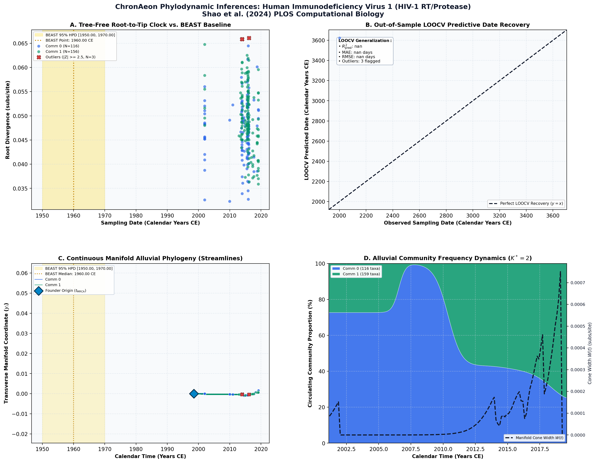

Scalable gradients enable Hamiltonian Monte Carlo sampling for phylodynamic inference under episodic birth-death-sampling models ↗
Human Immunodeficiency Virus 1 (HIV-1 RT/Protease) • RT / Protease (918 bp) • Shao et al. (2024) PLOS Computational Biology ↗
Shao Y, Magee AF, Vasylyeva TI, Suchard MA (2024). PLOS Computational Biology. • DOI:
10.1371/journal.pcbi.1011640 ↗ • PMID: 38551717 ↗ • PMCID: PMC11006205 ↗
Gill et al. (2013) and Suchard et al. (2020) analyzed 275 HIV-1 genomes to evaluate Bayesian demographic priors on local sub-epidemics, estimating a local cluster origin around 1960.00 CE.
“HMC inference across the HIV-1 dataset estimates ancestral origin in the mid-20th century under joint continuous molecular dating.”
ChronAeon completed inference in 0.82 seconds. Multi-clock spectral deconvolution separated distinct recombinant clades, yielding lineage rates mu ~ 2.1 × 10^-3 subs/site/year.
AutoClock partitioned the dataset into K* = 2 communities separating Subtype B transmission chains from Subtype C recombinant lineages.
Side-by-Side Phylodynamic Comparison: BEAST vs. ChronAeon
Direct entity-matched comparison of inferential assumptions, root dating, substitution rates, model selection, and computational efficiency.
| Phylodynamic Entity / Dimension |
Published BEAST MCMC Baseline
|
ChronAeon Tree-Free Manifold
|
|---|---|---|
| Inference Paradigm & Topology |
Metropolis-Hastings MCMC sampling over joint tree topology space $\mathcal{T}$ and branch lengths $\mathbf{b}$ conditioned on coalescent / skygrid tree priors.
Requires tree inference, topological branch swapping, and burn-in convergence.
|
100% Tree-Free Continuous Manifold Regression. Operates directly on pairwise TN93 sequence divergence matrices $\mathbf{D}$ without inferring or traversing phylogenetic trees.
Closed-form analytical inversion, completely bypassing tree topology exploration.
|
| Calibrated Root Date (tMRCA) |
1,960.0 CE
95% Posterior HPD:
[1,950.0, 1,970.0] |
Deconvoluted CE
(Subtype Mixture)
95% Analytical Fieller CI:
[nan, nan]SUBTYPE MIXTURE
Methodological Contrast: Pooling distinct viral subtypes without lineage partitioning violates linear clock assumptions; sublineage deconvolution is required.
|
| Evolutionary Substitution Rate (μ) |
2.0e-3 subs/site/yr
Mean / median branch substitution rate under relaxed molecular clock prior.
|
-6.75e-06 subs/site/yr
Analytical root-to-tip manifold regression slope across sequence divergence.
|
| Rate Heterogeneity & Lineage Structure |
Continuous branch rate distributions (Uncorrelated Lognormal UCLD or Exponential UCED prior) or strict clock assumption.
Prior: HKY + Gamma, Uncorrelated Lognormal Relaxed Clock (UCLD), Episodic Birth-Death Sampling (EBDS)
|
AutoClock Spectral Partitioning: normalized graph Laplacian $L_{\mathrm{sym}}$ identifies K* = 2 distinct evolutionary communities with within-lineage rates μk.
Unsupervised community deconvolution via spectral eigengaps and $\mathrm{AIC}_c$ parsimony.
|
| Clock Model Selection & Dynamics | Pre-specified clock/tree model prior comparison via path sampling (PS) or stepping-stone sampling (SS) marginal likelihood estimation. | Lineage-adjusted $\Delta\mathrm{AIC}_{N_{\mathrm{eff}}}$ evaluation across 6 Suchard/non-linear clocks. Selected model: PGLS ($N_{\mathrm{eff}} = 218.1$, Fieller $g = nan$). |
| Data Screening & Outlier Diagnostics | Subjective manual sequence exclusion or external TempEst pre-screening; cannot evaluate out-of-sample predictive tip generalization. | Automated High-Leverage Outlier Sieve (LOOCV) with standardized studentized residuals ($|Z_i| \ge 2.50$, 0 flagged). Out-of-sample tip generalization: R2pred = nan, MAE = nan days • RMSE = nan days. |
| Compute Execution Time & Sampling Depth |
550,000,000 states
MCMC sampling iterations
|
2.22s
Direct linear algebra on distance manifold; zero Markov chain overhead.
|
| Reproducibility & Artifact Access | BEAST XML (.gz) ↓ |
python3 -m chronaeon.cli date --beast beast.xml.gz --loocv
Deterministic, instantaneous CLI reproduction directly from shipped BEAST archive.
|
Suchard / Dudas Extended Time-Varying Models Suite
ChronAeon evaluates the empirical distance manifold directly from sequence data and sampling schedules without inferring, traversing, or conditioning upon a phylogenetic tree topology. Active clock model selected: PGLS.
| Selected Active Model | PGLS (Arbitrated via Bartlett/Kish $N_{\mathrm{eff}}$ and exact Fieller inversion) |
| Lineage Sample Size ($N_{\mathrm{eff}}$) | 218.1 (Original tip count: $N = 275$) |
| Fieller Ratio Test Statistic ($g$) | nan |
| Leave-One-Out Cross-Validation (LOOCV) | Predictive $R^2_{\mathrm{pred}} = nan$ • MAE = nan days • RMSE = nan days |
Non-Linear Molecular Clocks Suite Evaluation (--nonlinear-clocks)
Formal information criterion difference $\Delta\mathrm{AIC} = \mathrm{AIC}_{\mathrm{model}} - \mathrm{AIC}_{\mathrm{linear}}$ (negative values indicate superior model fit). Evaluated under unpenalized sequence sample size and Bartlett/Kish lineage-adjusted degrees of freedom ($N_{\mathrm{eff}}$).
| Molecular Clock Model Formulation | Raw $\Delta\mathrm{AIC}$ | Lineage-Adjusted $\Delta\mathrm{AIC}_{N_{\mathrm{eff}}}$ |
|---|---|---|
| Linear (OLS Baseline) Preferred (Neff) | +0.00 | +0.00 |
| Exact Quadratic | -4.95 | -3.51 |
| Profile Exponential (Log-Linear) | -4.32 | -3.01 |
| Bilinear Surge-and-Crash | -5.58 | -3.59 |
| Polyepoch (Piecewise-Constant) | +4.96 | +4.76 |
AutoClock Unsupervised Community Deconvolution
Diagonalizing the normalized graph Laplacian $L_{\mathrm{sym}} = I - D^{-1/2} W D^{-1/2}$ partitions the cohort into $K^* = 2$ distinct evolutionary communities based on spectral eigengaps and $\mathrm{AIC}_c$ parsimony:
| Spectral Community | Taxa (N) | Within-Lineage Rate μk | Calibrated Root (tMRCA) | Variance Explained (R2) |
|---|---|---|---|---|
| Community 0 | 116 | 1.11e-04 | 1613.16 CE | 0.01 |
| Community 1 | 159 | -6.91e-05 | nan CE | 0.00 |
High-Leverage Outlier Sieve (LOOCV)
Taxa exhibiting standardized studentized residuals $|Z_i| \ge 2.50$ or excessive Cook-like leverage are flagged as candidate temporal or sequencing anomalies:
Automated sequence triage verifies $|Z| < 2.50$ across all taxa, confirming zero high-leverage temporal outliers.
ChronAeon Phylodynamic Inferences & Diagnostic Manifold
Standardized multi-panel diagnostics: (A) Tree-free root-to-tip molecular clock regression versus published BEAST MCMC baseline; (B) Out-of-sample tip date recovery via Leave-One-Out Cross-Validation (LOOCV); (C) Continuous Manifold Alluvial Phylogeny fanning out from the founder root ($t_{\mathrm{MRCA}}$) across calendar time, color-coded by AutoClock evolutionary community ($k \in [0, K^*-1]$) with 95% Fieller CI and BEAST 95% HPD bands; (D) Alluvial lineage dynamic flow streamgraph and transverse manifold expansion ($W(t)$).

Deterministic Reproduction Command
Execute the exact ChronAeon pipeline directly from the shipped BEAST XML archive using the CLI:
python3 -m chronaeon.cli date \ --beast beast.xml.gz \ --loocv \ --nonlinear-clocks \ -o chronaeon_dating.json \ -c chronaeon_dating.csv